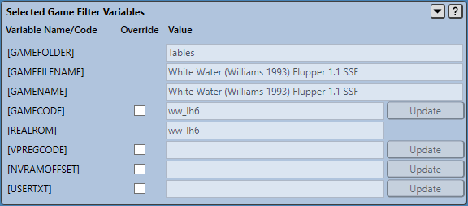

Virtual Pinball Backup Manager - managing your backups, one game at a time
The Selected Game Filter Variables panel allows users to override the value of variables extracted from game scripts in the case where the extraction panel was unsuccessful in extracting the values.
When viewing backup content, the Selected Game Filter Variables panel becomes a read-only panel and values cannot be updated as shown in the following example.
Various game filters make use of common game values representing items such as the games filename, or the game name itself (often its ROM name in VPX), or associated text files.
To save the user having to manually enter these values, a series of variables are provided that can be included in either the Path or File Filter values on the Selected Game Custom Filters panel.
Because these variables are extracted from game scripts, and game scripts are completely freeform, at times it is not possible to automatically extract values. The Selected Game Filter Variables Panel addresses this issue by providing a facility to allow some filter variables to be manually overridden.
This panel serves two purposes - to display the current extracted values of various variables and provide context to users modifying custom file filters, and to allow users to override specific variables when appropriate.
When modifying custom filters, double clicking on a variable label (such as [GAMENAME]) will copy the text and allow it to be pasted into filter text fields.
Not all filter variables can be edited by the user (for instance [GAMENAME]). Additionally, some variables are only valid for specific emulators. Only filter variables valid for the currently selected games emulator are displayed.
Not all games contain all filter variables. When no evidence can be found in game scripts of a variable being required, it is greyed out in the File Variables panel. An example of this is [VPREGCODE] in the provided image. Even when a variable is greyed out, should the user detect that it is required, an override can still be applied by ticking the associated checkbox.
Tooltiups are provided to describe each variable and how they can be modified.
A summary of available filter variables is provided below:
Variables that can be overridden have a checkbox available to mark them as being overridden. When initially enabling an override, the value used for the override matches the current extracted value. Users are then able to modify the value in the text field.
Color coding is used to highlight missing expected values (red) and values that need to be committed (yellow) by pressing the Update button.
Color coding is used to highlight missing expected values (red) and values that need to be committed (yellow) by pressing the Update button.
Changes applied to filter variables are immediately reflected in other panels.
The following example shows an override being applied to the [GAMECODE] variable initially which results in files previously matched to the [GAMECODE] value no longer being matched to the game. This is reflected in both the Installed Games panel which shows the game no longer matches the backup and provides a tooltip highlighting the differences, and in the Selected Game Content panel which shows the files are no longer matched to the game.

When filter variables are found to contain differences between the system and the backup, it is possible to perform a backup or restore of just the filter variables configuration - saving the need to perform another full game backup or restore.
When differences have been detected, the Selected Game Filter Variables panel border and the individual Variable Name/Code names of any variables with differences are highlighted in an error colour. The examples below shows the case where the [USERTXT] variable is out of synch.
Depending on whether the current or backup filter variables are being displayed, a Backup Values or Restore Values button is provided in the top right corner of the panel to allow the selected games filter variables to be backed up or restored - as seen below.
Pressing Backup Values or Restore Values button will backup or restore the selected games filter variables.
Filter variables must be in synch prior to performing any individual file backups or restores in the Selected Game Content panel.